Situation
For HCDE 539 Physical Computing at UW, I wanted to explore how everyday objects could carry social meaning across distance — without relying on screens, messages, or notifications. Inspired by the geometric folds of Bao Bao Issey Miyake, the Lumio Book Lamp, and Hiroshi Ishii's vision of Tangible Bits, I proposed Luce — a connected book lamp that transforms the act of opening a book into a dual signal of presence: switching on the lamp's interior light while broadcasting the action via Bluetooth, so a paired device elsewhere could mirror the same illumination — turning two distant objects into one shared, synchronised moment of light.
For HCDE 539 Physical Computing at the University of Washington, students were asked to conceive and build an original physical computing project — combining hardware, software, and meaningful interaction into a functional artifact.
I was drawn to a question that felt both personal and design-rich: how can physical objects communicate presence across distance without the intrusiveness of conventional digital communication? Friends, family members, and loved ones living apart often want a subtle sense of connection — not a ping, not a call, but something quieter and more ambient.
Two objects inspired the form: the geometric folds of Bao Bao Issey Miyake bags, whose triangular panels shift and transform as the bag opens, and the Lumio Book Lamp, which collapses into the form of a book and unfolds into a lamp. Together, they suggested a design direction where the act of opening something familiar could carry social meaning. Underpinning this was the vision of Tangible Bits — Hiroshi Ishii's call to seamlessly fuse digital function with physical form, so that the object itself becomes the interface rather than a screen mediating it.
I proposed Luce — a connected book lamp that would transform the simple gesture of opening a book into a dual signal of presence: switching on the lamp's interior light while simultaneously broadcasting that action via Bluetooth, so a paired device elsewhere could mirror the same illumination — turning two distant objects into one shared, synchronised moment of light.
Task
As a solo project with zero prior fabrication experience, I was responsible for the full design and development of Luce — spanning physical fabrication, electronics, and firmware. The system had to be fully self-contained and portable, fit within the compact form factor of a book lamp, and work without being tethered to a laptop.
As a solo project, I was responsible for the full design and development of Luce — spanning physical fabrication, electronics, and firmware:
- Design and fabricate the book lamp exterior and interior structure using laser cutting and craft materials
- Build the sensing, actuation, and communication system — reed switch, ESP32, RGB LED, and Bluetooth Low Energy
- Write firmware that detects the lamp's open/closed state, controls illumination, and transmits status wirelessly
- Achieve a fully standalone system, powered independently without a laptop, within the compact form factor of a book lamp
The constraints were demanding: a compact form factor meant every component had to be placed deliberately, the circuit had to be shallow enough to allow the book to close, and the power supply had to be reliable without exceeding the lamp's physical dimensions. All of this had to be figured out from scratch — I came into this project with zero prior knowledge in fabrication.
Actions
The switch design went through two rounds of iteration — from an unreliable mechanical paper-and-conductive-tape switch incompatible with the ESP32, to a reed switch with internal pull-up GPIO that cleanly detected the book's open/closed state via a magnet embedded in the opposing cover. To achieve standalone operation, I iterated through four power supply designs — from a 1.5V coin battery to a 5V portable power bank — before finding one that reliably powered the ESP32 within the lamp's form factor. In parallel, I iterated on the exterior (wood vs. cardboard), hinge (kerf patterns vs. cardboard interior), and fold geometry to resolve the mutual tension between physical form constraints and electronics placement — all from zero prior fabrication experience.
Iterated on the switch design from mechanical to reed switch
- Design 1 — Mechanical switch (paper + conductive tape): A mechanical switch was constructed from paper and conductive tape, designed to physically open or close the circuit depending on the opening or closing of the book lamp
- Design 2 — Reed switch sensor: A reed switch was embedded in the lamp and paired with a small magnet on the opposing book cover. The reed switch was connected to one of the ESP32's GPIO pins, configured with an internal pull-up resistor. When the book is closed, the magnet brings the reed switch close, closing the circuit and pulling the GPIO pin to ground. When the book opens and the magnet moves away, the GPIO pin is internally pulled back to high — cleanly signalling the lamp's open or closed state to the ESP32
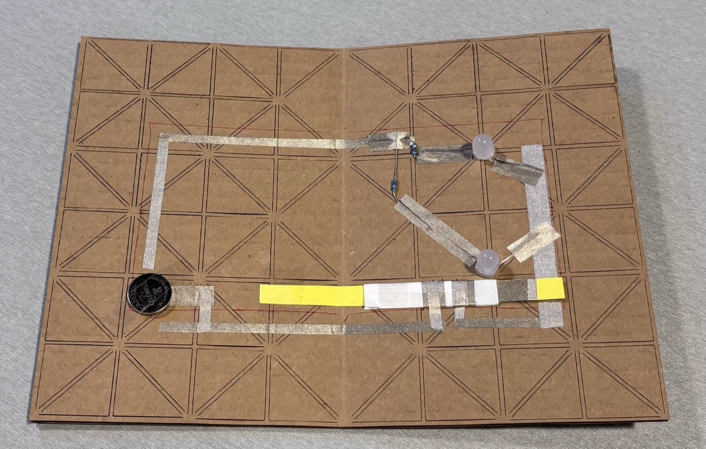
Design 1 — Mechanical slider switch
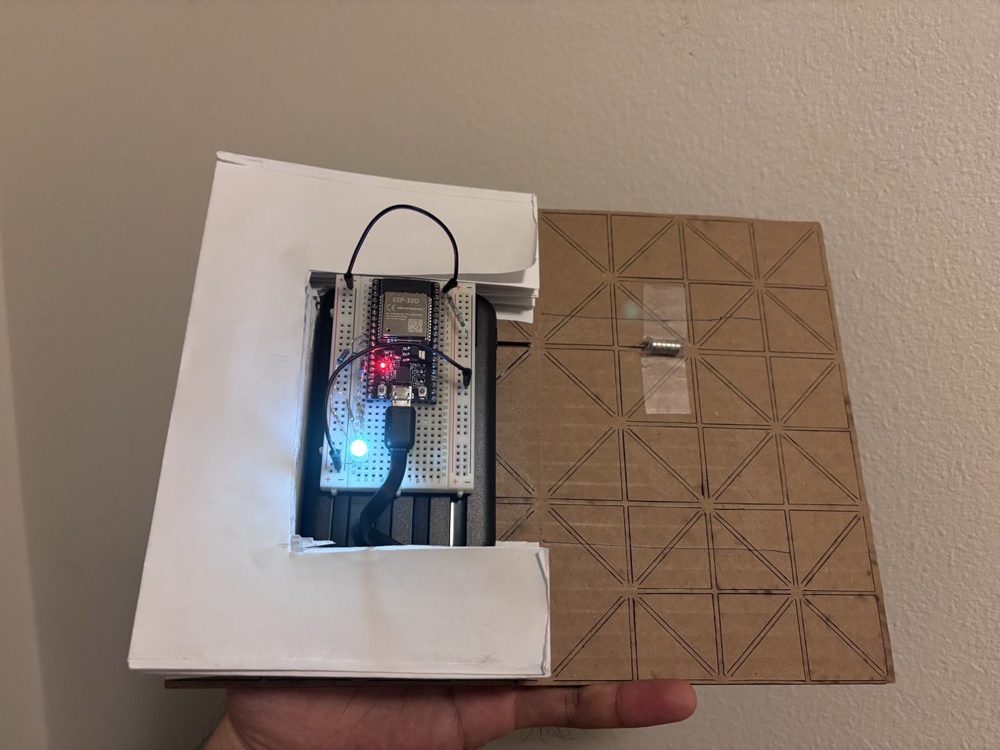
Design 2 — Reed switch sensor ★ Final design
Solved standalone power through 4 rounds of iteration
- Design 1 — 1.5V coin battery: Too low a voltage to reliably drive the ESP32; insufficient even with multiple cells in series
- Design 2 — 3V 2×AA battery pack: Better voltage but still unstable under the ESP32's peak current draw during BLE advertising
- Design 3 — 3.7V LiPo battery pack: Sufficient voltage but the battery's physical profile was too tall to allow the book lamp to close properly
- Design 4 — 5V portable power bank: Provided clean, regulated 5V power, a low enough profile to fit within the lamp's interior, and sufficient capacity for extended use — chosen as the final design

Design 1 — 1.5V coin battery
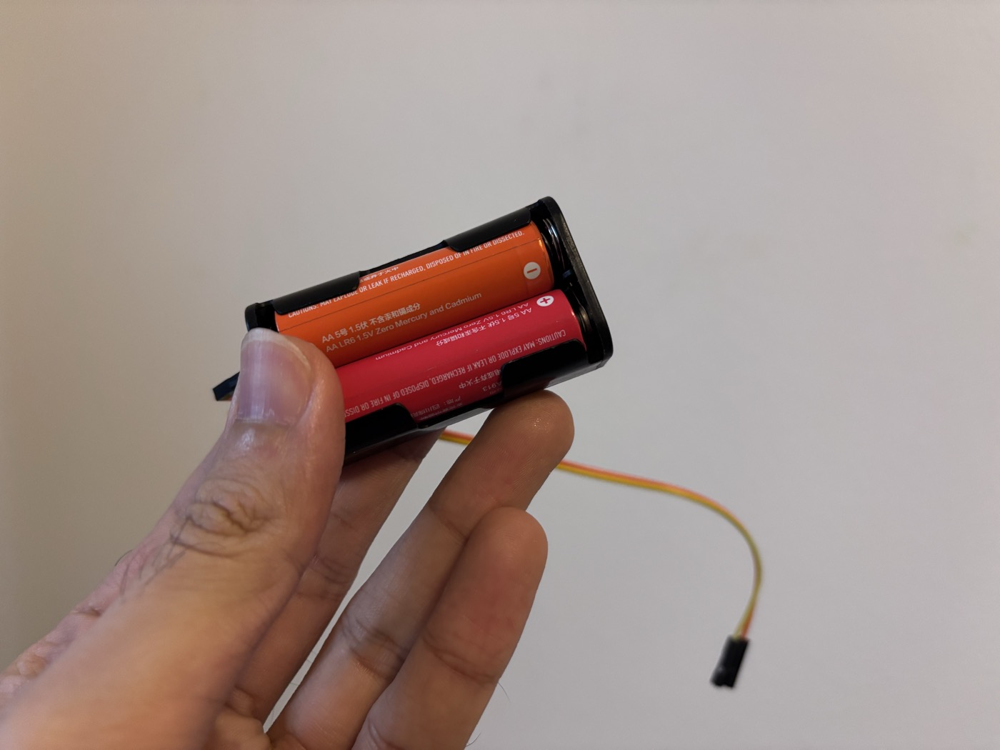
Design 2 — 3V 2×AA battery pack
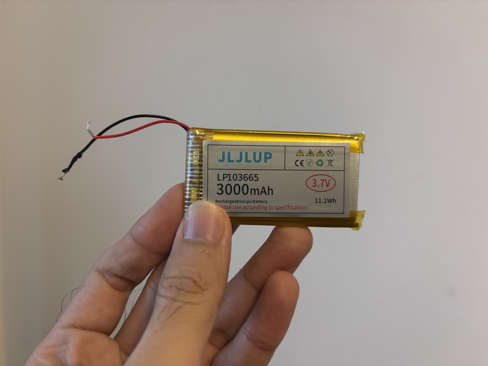
Design 3 — 3.7V LiPo battery pack
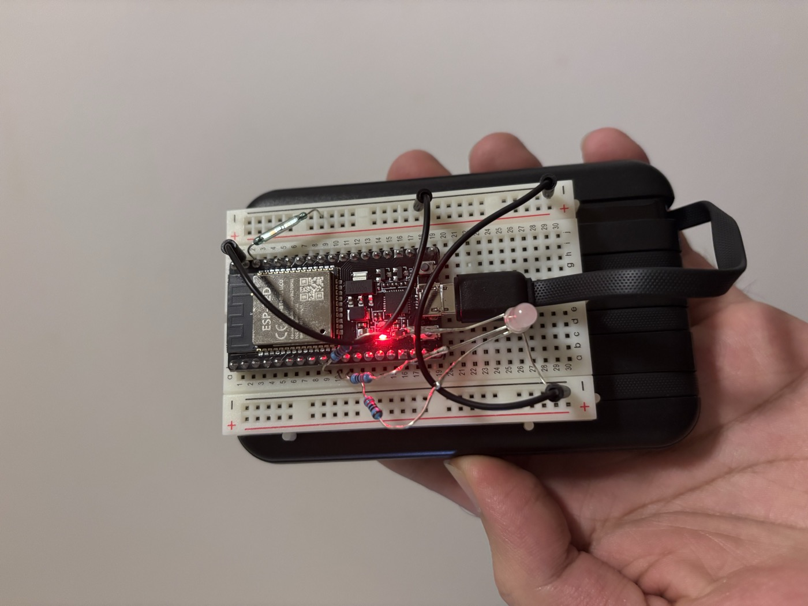
Design 4 — 5V portable power bank ★ Final design
Balanced form and function across the compact book lamp structure
- Exterior — wood vs. cardboard: Laser-cut the same geometric pattern into both wood and cardboard to compare material suitability. Wood was chosen for its rigidity and the clean definition it gave the triangular facets; cardboard was too brittle along the cut edges to bend without cracking
- Hinge — kerf patterns vs. cardboard interior: Tested multiple wooden kerf patterns as living hinges between the two exterior panels. All had too high a bend radius, preventing the book from opening and closing smoothly. Replaced with a flexible cardboard interior, which provided the necessary malleability while holding its shape
- Fold design: Explored different paper folding configurations using A3 sheets to find the geometry that best balanced interior volume (for electronics) with exterior silhouette
- Circuit layout: Arranged all components — ESP32, reed switch, RGB LED, and power bank — to minimise stack height, routing wires flat against the interior surface and positioning the power bank horizontally to keep the profile as low as possible
Exterior Design Iterations
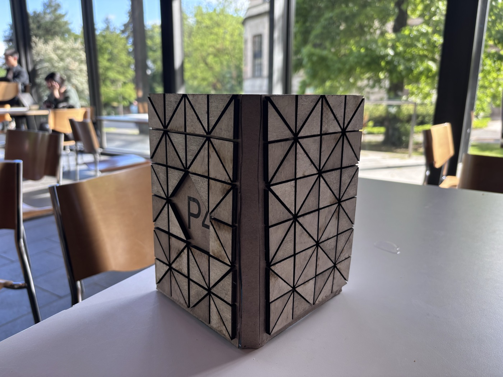
Design 1 — Solid triangles
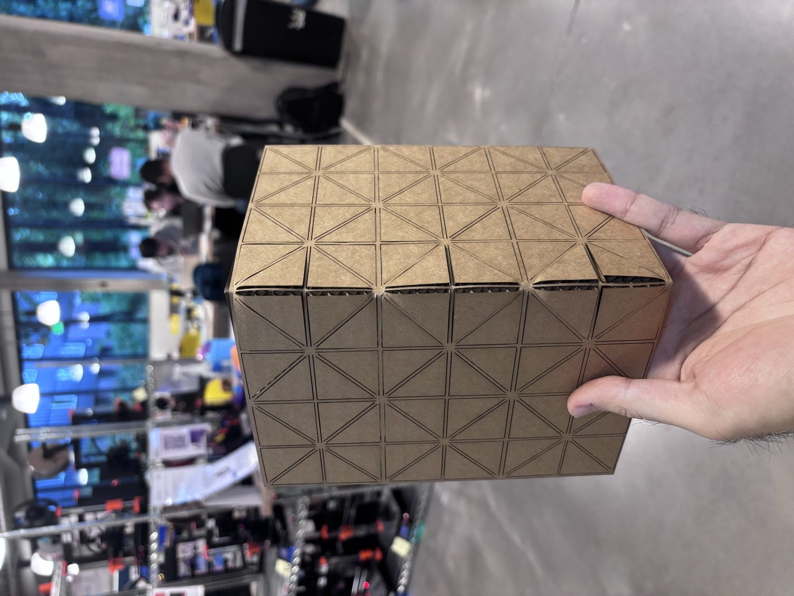
Design 2 — Cardboard triangular cuts
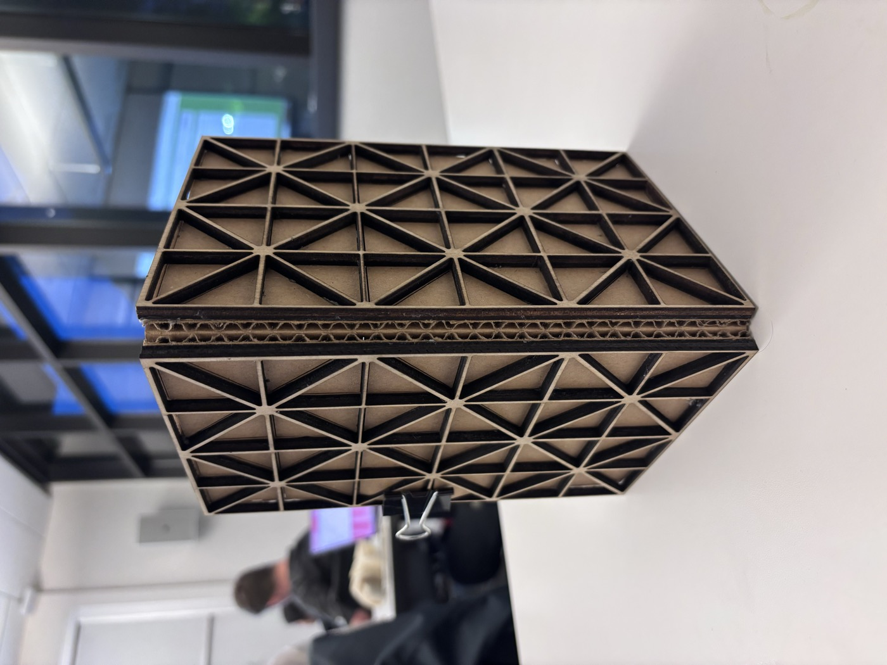
Design 3 — Wooden exterior ★ Final design
Hinge Design Iterations
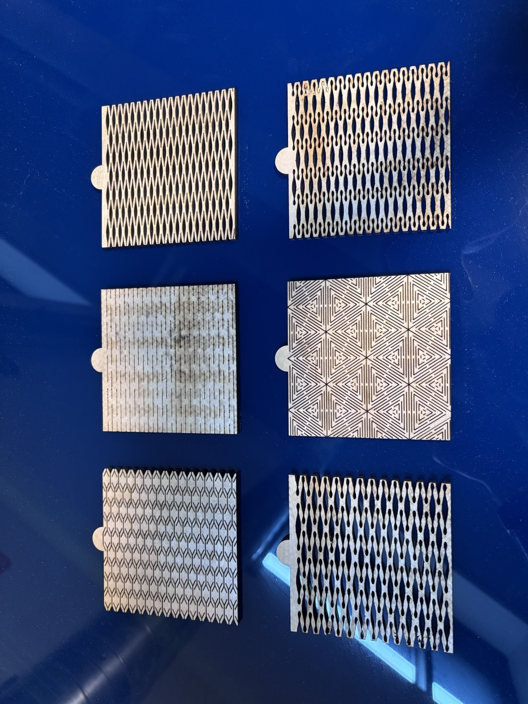
Design 1 — Six kerf patterns (too rigid)
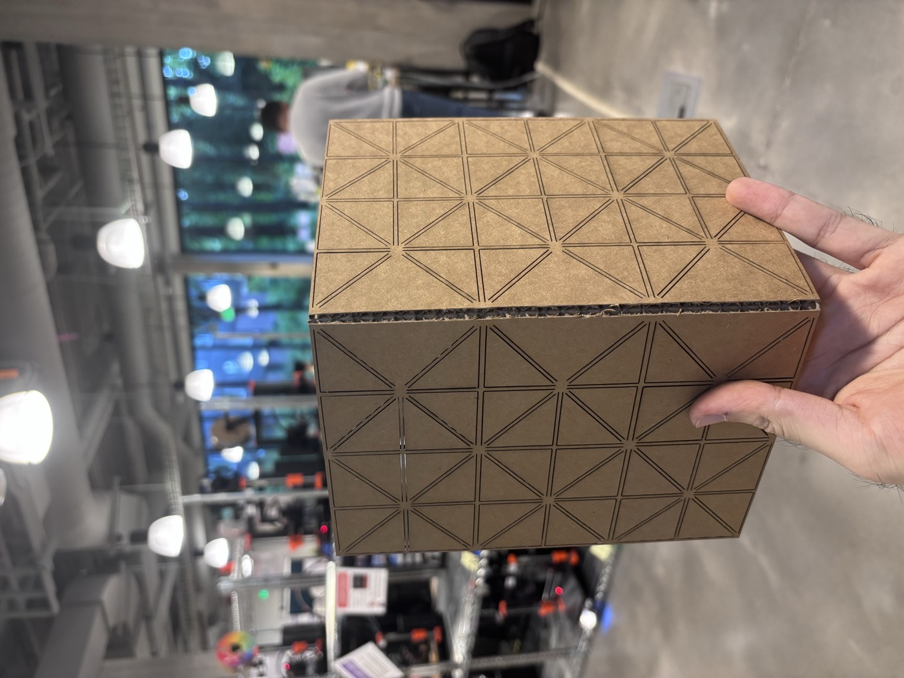
Design 2 — Cardboard interior ★ Final design
Fold Design Iterations
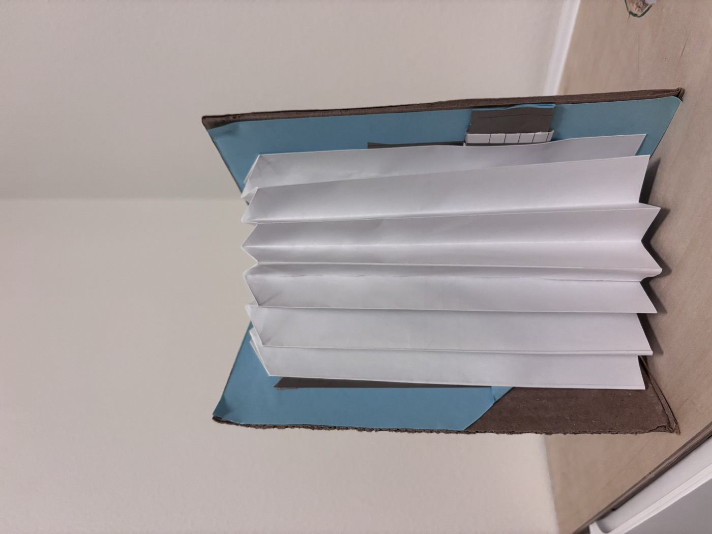
Design 1 — One fold, open bottom
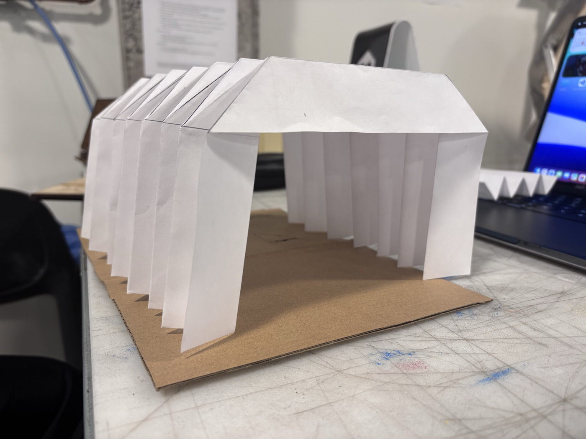
Design 2 — Two closed folds
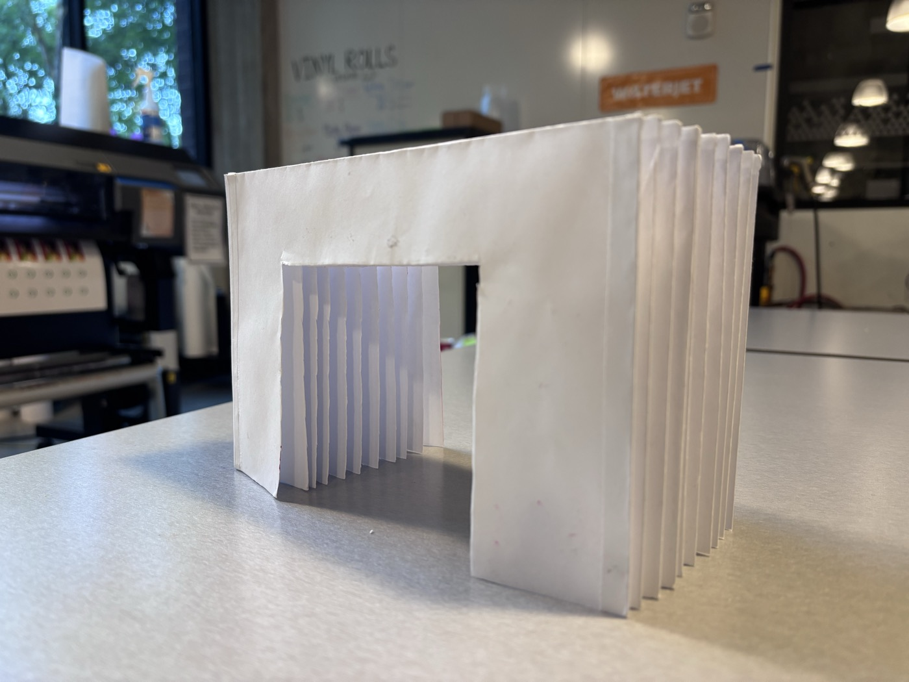
Design 3 — Two 90° folds ★ Final design
Results
Luce was the only self-contained and portable project in the entire HCDE 539 cohort — every other project remained tethered to a laptop for power. The final prototype achieved a 4.0 / A grade, with opening the book triggering illumination and BLE state transmission fully independently. A complete demo video was recorded documenting the end-to-end system.
- Produced the only self-contained and portable project in the entire HCDE 539 cohort
- Instructor Garrett and TA Gina expressed strong satisfaction with the results — and we have remained in contact to this day
Demo — Luce final project for HCDE 539 Physical Computing
- Delivered a fully functional standalone connected book lamp — opening the lamp triggers the reed switch, illuminates the RGB LED, and transmits the lamp's open state via Bluetooth Low Energy, with no laptop connection required
- Achieved a 4.0 / A grade for HCDE 539 Physical Computing
Key Takeaways
Luce sharpened my ability to design under mutual physical and electronic constraints, self-teach physical fabrication skills from scratch — including laser cutting and 3D printing — treat technical decisions as design decisions, and embed meaningful social interaction into the form and behaviour of everyday objects without a screen in sight.
Through this project, I strengthened my ability to:
- Design under mutual constraint — where form decisions directly affect electronics, and vice versa — requiring iterative co-evolution rather than sequential design
- Physical fabrication skills including laser cutting and 3D printing — the latter explored with PrusaSlicer in earlier design iterations not documented here — all self-taught from zero prior fabrication experience
- Treat technical variables (power supply, component placement, circuit architecture) as design variables on equal footing with aesthetic ones
- Embed social meaning into the form and interaction of physical objects, rather than relying on screens or digital notifications to carry the communicative weight
- Build standalone, wireless embedded systems from scratch — covering hardware fabrication, firmware development, and Bluetooth communication